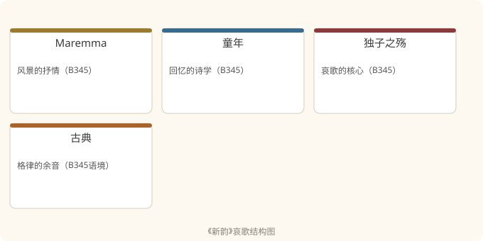

新韵
一、基本信息
| 作者 | 焦苏埃·卡尔杜齐 |
|---|---|
| 成书/出版 | 1887年（Britannica B345：Rime nuove (1887)——与《野蛮颂》'contain the best of Carducci's poetry'） Giosue Carducci — Encyclopaedia Britannica（百科全书） |
| 国别/地区 | 意大利 |
| 时代 | 近代 · 19世纪80年代 |
| 体裁 | 诗集 |
| 语言 | 意大利语 |

《新韵》哀歌结构图（主题·结构图）
二、创作背景
Britannica（B345）：Rime nuove——与《野蛮颂》一起'contain the best of Carducci's poetry'。
Britannica（B345）：含 Maremma 风景、童年回忆与'the lament for the loss of his only son'（独子之殇）。
Britannica（B345）：1906诺奖。
三、内容脉络
（通说待核——B345未载篇目）Maremma 风景的抒情与童年回忆。
（通说待核）'独子之殇'的哀歌（《致母亲》等说）。
四、主要人物表
| 人物 | 身份 | 说明 |
|---|---|---|
| 抒情'我' | 古典主义者 | （B345 语境） |
五、主题与艺术特点
- 风景与回忆（B345：Maremma evocations, childhood memories）。
- 丧子的哀歌（B345）。
- 古典格律的现代意语（B345 交叉）。
六、影响与评论
- Britannica：'contain the best of Carducci's poetry'（B345）。
Giosue Carducci — Encyclopaedia Britannica（百科全书） - Britannica：1906诺奖（B345 交叉）。
Giosue Carducci — Encyclopaedia Britannica（百科全书）
七、阅读建议
难点
- 托斯卡纳方言地名。
- 哀歌与颂歌的语体切换。
- 《新韵》中译名（《新诗集》两说——通说待核）。
- 意大利文原版（公有领域）。
卡杜齐抒情诗首选；与《野蛮颂》对读。
八、待核实
- 篇目核对（B345未载）。
- 1887年出版细节待核。
- '独子'哀歌篇目归属待核。